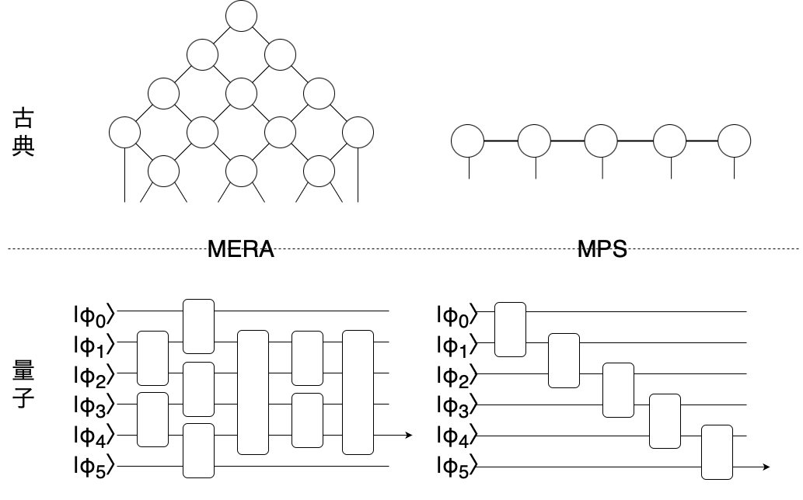
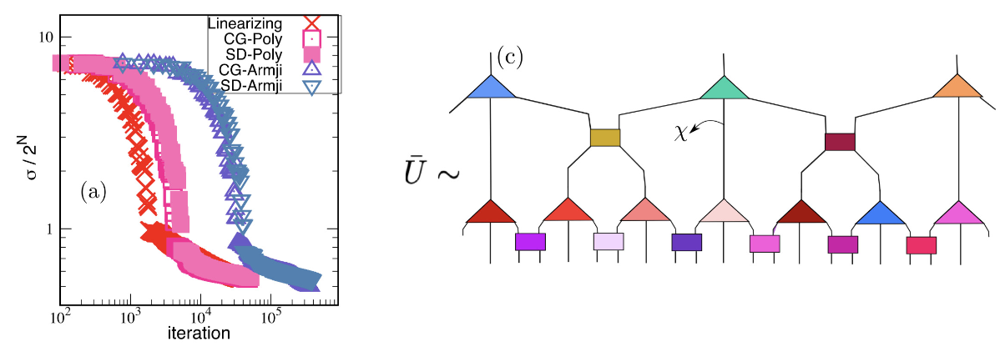
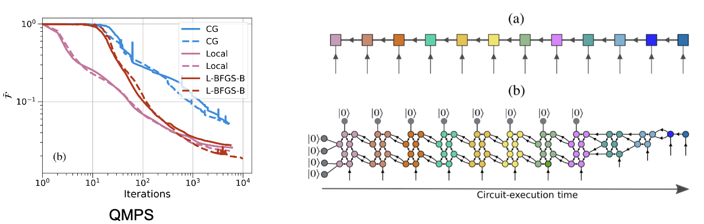

量子計算分野への応用の1つとしてテンソルネットワーク変分量子回路という手法を解説します。この分野は(おおよそ)2020年以降から見られ始めた分野であり、まだ完全に確立されてはいません。
目次
- テンソルネットワーク変分量子回路とは
- 既存研究1: Optimization schemes for unitary tensor-network circuit[Reza Haghshnas+, PRR, 2021]
- 既存研究2：Variational Power of Quantum Circuit Tensor Network[Reza Haghshenas+, PRX, 2022]
- その他の既存研究
テンソルネットワーク変分量子回路とは
テンソルネットワークはとある状態を効率よく表現する手法だが、ここではテンソルをユニタリに限定し、量子回路を表現することを考える。量子機械学習の分野で登場する変分量子回路アルゴリズムとテンソルネットワークを組み合わせた手法と考えることができる。つまり量子回路中のユニタリ操作のパラメータを変化させながら、量子回路を所望の形に最適化する手法である。テンソルネットワークのボンド次元を\(D\)、量子回路のqubit(ボンドqubitと呼ぶ)を\(n\)とすると、\(D=2^n\)の関係がある。
以下にMERAとMPSを量子回路に対応させた例を示す。

次にテンソルネットワーク変分量子回路の利点について説明する。この手法を用いると古典計算機から量子計算器への移行が容易になる。つまり古典で学習したモデルを量子に移行してさらに最適化を行うことができる。またcircuit cutting techniques(参照)を用いることで少ないqubitの量子計算機への応用が可能になる。さらにテンソルネットワークを用いていることによりヒルベルト空間の増加を抑えられ、様々なテンソルネットワークのテクニックが使える。つまりqubit効率のよりテンソルネットワーク量子回路が使える。また線形演算子のみで構成されるため理論的な理解が豊富である。
既存研究1: Optimization schemes for unitary tensor-network circuit[Reza Haghshnas+, PRR, 2021]
この手法を用いた既存研究として Optimization schemes for unitary tensor-network circuit[Reza Haghshnas+, PRR, 2021] について解説する。この論文ではテンソルネットワークで構成した量子回路\(\bar U_{\lbrace u, w\rbrace}\approx U\)を、ハミルトニアンを対角化するように最適化するタスク(つまり\(U^† H U=D\)を満たす\(U\)を探索)を考えている。回路はMERA likeな構成とし、コスト関数\(\sigma ^2=Tr(H^2)-\sum_{i=1}^{2^N}[\bar{U^†}H\bar{U}]^2_{(i, i)}\)と定義する。
最適化の方法としては2パターン調べられていて、1つ目がline-search algorithm。これはテンソルを1つずつ最適化していき、他は固定するという手法である。最急降下法(SD)や共役勾配法(CG)の考え方を用いている。例えばSDを用いたときあるユニタリは次のように更新される。\(u_{i+1}=e^{-\alpha g_i}u_i\)。2つ目がlinearizing algorithmであり、これは最大4次である\(\sigma ^4\)を\(u_i\)について線形化することで問題を簡単化している(詳細は省略する)。
 (図は論文より引用)
既存研究2：Variational Power of Quantum Circuit Tensor Network[Reza Haghshenas+, PRX, 2022]
この論文ではハイゼンベルグモデル、ハバードモデルの基底状態を表現するテンソルネットワークを変分的に探索するタスクを考えている。既存研究1の方では量子回路をテンソルネットワークとして表現していたが、こちらでは量子状態をテンソルネットワークで表現している。通常のテンソルネットワーク表現(全ての要素が独立していてdenseなテンソル)vsユニタリのテンソルネットワーク表現(よりsparse)、テンソルネットワークの形状での性能比較、必要なパラメータ数、最適化手法などが評価されている。コスト関数\(F=1-|{\langle \Psi|\psi\rangle}|\)としている。ここで$ |$は十分大きなボンド次元(~400)でDMRGアルゴリズムを用いて求められたエラーが無視できる程度の量子状態(つまり正解データのようなもの)。 $ |$はAnsatzによって得られた量子状態。
最適化の方法として2パターン調べられている。1つ目は2体ユニタリゲートを1つずつ、他は固定しながら最適化している。つまりDMRG likeな方法である。2つ目は全体の勾配を同時に計算している。CG, L-BFGS-Bなどよく知られた方法である。結論としてはユニタリの方が表現力が高く、コンパクトであるということが述べられている。基底状態シミュレーションにおける量子優位性を示唆している。
 (図は論文より引用)
その他の既存研究
その他のテンソルネットワーク変分量子回路について論文を以下に挙げる。 - Variational quantum simulation of the critical Ising model with symmetry averaging [Troy J. Sevell+, PRA, 2023]：Deep multiscale entanglement renormalization ansatz(DMERA)形式の変分量子回路によるcritical Ising modelのシミュレーションで従来手法(QAOA)を上回る性能を発揮することを示した。またqubit数や回路の深さを抑えても系統誤差を小さくすることができるということを主張している。
Classical versus quantum: Comparing tensor-network-based quantum circuits on Large Hadron Collider data [Jack Y. Araz+, PRA, 2022]: 古典的なTNとTN形式の量子回路で機械学習の性能を比較。古典で同様の性能を出すためには、非常に大きなボンド次元とヒルベルト空間が必要になり、またそうしたとしても勾配を失いやすくより幅広い学習データが必要になることを示した。また古典-量子ハイブリッドアルゴリズムの提案も行なっている。
Practical overview of image classification with tensor-network quantum circuits [Diego Guala+, scientific reports, 2023]: テンソルネットワーク変分量子回路を実際の画像分類タスクにどう応用するかを解説している。
Towards Quantum Machine Learning with Tensor Networks [William Huggins+, arXiv:1803.11537, 2018]:テンソルネットワーク変分量子回路を用いた機械学習の概要を解説している。テンソルネットワーク形式を用いることのメリットを詳しく説明している。